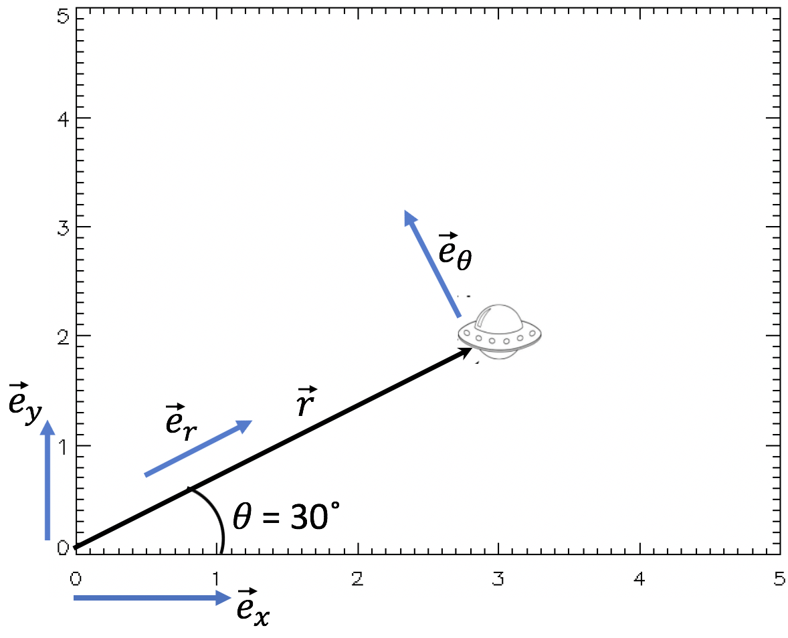

Forrige side🙂 🙁Forberede 2-legemeproblem: enhetsvektorerFORUM
STEMMER!.Vi ser på figuren igjen:

Poisjonsvektoren har altså kun en komponent som går langs e⃗r, ingen som går ortogonalt. Hvis vi tenker litt på det så er det egentlig opplagt siden e⃗r er definert fra r⃗.